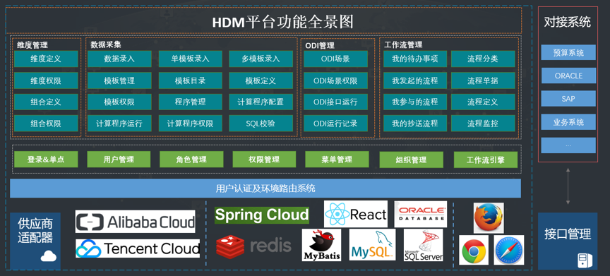

HDM的安装和应用
汉得数据管理平台HDM是一套企业数据采集工具，它包含维度管理、数据采集、ODI管理、任务管理、系统管理、组织管理、开发管理、消息管理、调度平台、工作流和审计管理功能，为企业提供全方位的数据采集及应用服务。
企业数据采集及应用越来越受到企业决策和管理者的重视，尤其是近年来商务智能技术的兴起，企业在预算管理，报表合并，数据填报和清洗方面更需要专业化、精益化和快速化的利用自身数据获得商业价值。根据汉得多年数据采集分析项目实施经验，并结合数据应用需求，我们研发汉得数据管理平台暨HDM产品助力企业数据采集管理，加速企业价值的实现。

为更好的应对上述这些数据采集应用需求，HDM具备功能如下：
定义维度以及维值，维值可具备层级关系，来帮助定性和定量划分及使用数据，是使用数据采集的一种基本配置，维度定义具有从数据源中选择视图以及默认创建两种方式
对于维度可选择是否进行权限控制来按照用户组进行权限隔离
多个维度关联可形成组合
对组合中包含的各组合项可以进行开启与关闭操作
模板是数据采集的基础配置。模板定义可创建模板中各字段表列的属性关系，更具自定义的属性动态生成数据维护页面，模板中也可进行个性化设置，如模板列的必输性、唯一性、默认值等；模板目录可对模板进行分类，便于数据维护时的查看使用；模板权限可对模板进行权限控制，提高其安全性。
数据录入是数据采集的核心和主要功能，具有界面上录入和excel导入导出以及接口执行等方式，且具备多种校验方式。
可支持配置计算程序以及SQL校验程序对模板的数据进行校验及录入操作
ODI管理功能可将ODI接口部署并应用到HDM系统中，且可在HDM系统中配置完成调用ODI所必须的一些基本条件，如工作资料库配置，代理配置，参数配置等；可对ODI接口进行分类以便查看使用，并且可对ODI接口配置权限进行安全控制
定义工作流暨审批流程，对于模板的数据可搭配工作流实现数据的填报审批，用工作流引擎运行定义好的流程并对其进行监控，达到提高工作效率、更好的控制过程、增强对客户的服务、有效管理业务流程等目的。
支持单点登录，用于集成外部CAS，OAUTH2，SAML，IDM等协议的单点登录，可通过配置多个前端域名对应不同的单点登录协议，访问不同域名时跳转到相应单点登录页进行认证。
用于维护系统角色，并为角色分配权限集，最终将角色分配给用户，用户便拥有了角色的权限。
用户管理包含子账户管理以及用户组管理，子账户管理功能 用于管理系统用户，为用户分配角色等。在SaaS环境下，此功能分平台层和租户层功能，平台层可查询所有租户的用户，租户层只能查询当前租户的用户。用户组管理功能 用于管理用户组并将用户分配给用户组。
维护系统目录及菜单，菜单下可维护权限集
组织管理功能可进行组织，员工及岗位的定义与关联配置。
没有繁琐的建模、没有繁琐的配置。业务用户完全自主定义采集数据模板；完全界面化操作，无需编程，直接生成报表。
多种数据校验方式，全方位保证数据的有效性，数据类型验证、值集验证、一致性验证
支持手工填报以及excel导入导出和复杂样式的导入导出；且具有灵活的数据更新策略，包含覆盖式、合并式、覆盖和合并式等
工作流的定义流程业务化，能够通过可视的、易理解的、规范化的操作方式来让业务人员定义工作流。
HDM是汉得为满足企业数据采集应用需要而潜心研发的数据管理平台，旨在以全新的技术手段帮助企业解决数据管理问题。
HDM是基于汉得HZERO中台架构开发，采用J2EE技术体系，基于Spring Cloud微服务框架进行封装，设计灵活可扩展、可移植、可应对高并发需求，同时具有高可用、可伸缩、可扩展、高性能、安全性等特点。